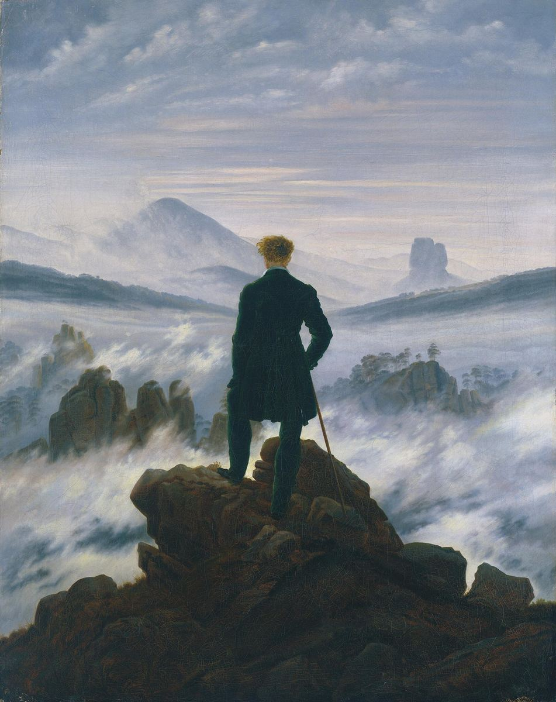

Wanderer above the Sea of Fog

Palette
- Gunmetal · your word: Gunmetal
- Grey · your word: Grey
- Light slate gray · your word: Grey
- Silver · your word: Silver
- Slate · your word: Slate
- Black olive · your word: Gunmetal
Almost everything here is grey: the palette runs from gunmetal rock to silver fog, with faint blue and violet in the mist. Color barely changes, so value does the work. The darkest shape, the figure in his dark coat, stands against the lightest part of the picture, and the eye goes straight to him.
Image
Wikimedia Commons · Public domain

Hex values are screen approximations. Every page lists its sources.